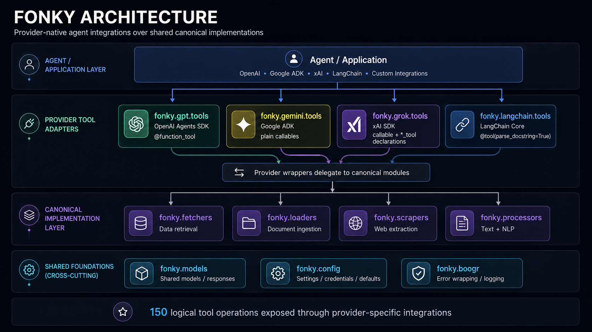
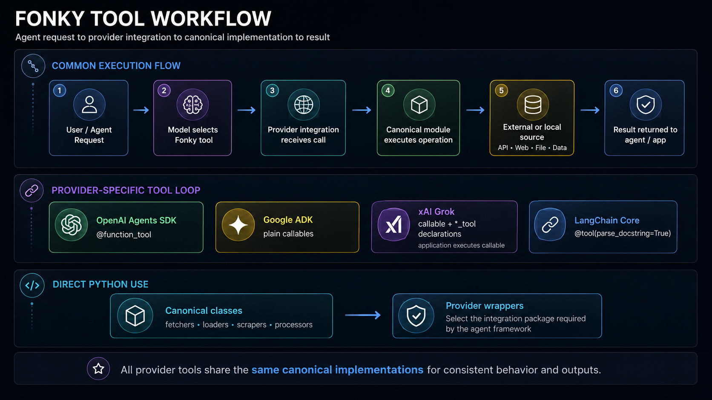

Architecture¶

Package structure¶
fonky/
├── __init__.py
├── boogr.py
├── config.py
├── fetchers.py
├── loaders.py
├── models.py
├── processors.py
├── scrapers.py
├── gpt/
│ ├── __init__.py
│ └── tools.py
├── claude/
│ ├── __init__.py
│ └── tools.py
├── gemini/
│ ├── __init__.py
│ └── tools.py
├── grok/
│ ├── __init__.py
│ └── tools.py
└── langchain/
├── __init__.py
└── tools.py
Canonical implementation layer¶
| Module | Responsibility |
|---|---|
fonky.fetchers |
External data retrieval and API-backed operations. |
fonky.loaders |
File, document, cloud, mail, notebook, and structured-data loading. |
fonky.scrapers |
Web-page extraction, rendering, crawling, and structured-content extraction. |
fonky.processors |
Text cleaning, tokenization, chunking, NLP, vectorization, and semantic search. |
fonky.models |
Shared request and response models. |
fonky.config |
Runtime configuration and credentials. |
fonky.boogr |
Error wrapping and logging. |
Provider modules delegate directly to this layer. Canonical functionality is not duplicated in provider packages, and one provider package must not serve as the implementation layer for another provider package.
Provider integration layer¶
| Package | Integration contract |
|---|---|
fonky.gpt.tools |
OpenAI @function_tool wrappers. |
fonky.claude.tools |
Anthropic @beta_tool wrappers. |
fonky.gemini.tools |
Plain callable wrappers for Google ADK. |
fonky.grok.tools |
Executable wrappers plus xAI declaration objects. |
fonky.langchain.tools |
LangChain @tool(parse_docstring=True) wrappers. |
Anthropic Claude¶
fonky.claude.tools is a peer provider adapter. Each public Claude tool is decorated directly with
Anthropic's @beta_tool and delegates to the same canonical implementation classes used by the
other provider packages.
Claude tool call
↓
fonky.claude.tools
↓
fetchers.py / loaders.py / scrapers.py / processors.py
↓
canonical Fonky operation
The Claude adapter does not import fonky.gpt.tools, unwrap OpenAI tool objects, or dynamically
register another provider's tools.
Anthropic derives a Claude tool's input schema from the decorated callable's typed signature and docstring. The function signature therefore remains part of the provider contract and should preserve the canonical Fonky argument semantics and defaults.
Anthropic's automatic Tool Runner expects tool results to be strings or supported Anthropic content blocks. Fonky does not change canonical return types merely to satisfy that execution helper. Tools that return dictionaries, DataFrames, NumPy arrays, document collections, or other structured Python objects require application-level serialization when their results are returned to Claude through a manual tool-use loop or other Anthropic workflow.
Tool naming¶
Executable wrapper names retain their operational prefix:
Separate xAI declaration variables remove the leading operation prefix and append _tool.
When stripping the prefix would create a collision, the operation is retained as a trailing qualifier.
fetch_arxiv -> arxiv_fetch_tool
load_arxiv -> arxiv_load_tool
read_pdf -> pdf_read_tool
load_pdf -> pdf_load_tool
fetch_web_page -> web_page_fetch_tool
scrape_web_page -> web_page_scrape_tool
Documentation contract¶
Public tools use typed Python signatures and Google-style documentation comments.
def fetch_cse_search(
keywords: str,
results: int=10 ) -> Any:
"""Retrieve Google Programmable Search Engine results.
Purpose:
Retrieve search results through the canonical Fonky implementation.
Args:
keywords (str): Search terms submitted to Google Programmable Search Engine.
results (int): Maximum number of search results to request.
Returns:
Any: Structured result returned by the canonical implementation.
"""
Types remain authoritative in the function signature. The documentation comments provide the metadata used by MkDocs, mkdocstrings, and frameworks that parse Google-style argument descriptions.
Execution workflow¶

Agent execution¶
User request
↓
Agent selects Fonky tool
↓
Provider integration receives tool call
↓
Fonky wrapper delegates to canonical module
↓
Canonical implementation executes operation
↓
External or local source returns data
↓
Result returns to agent
Direct Python execution¶
Canonical modules may be used without an agent framework when provider tool metadata is not required.